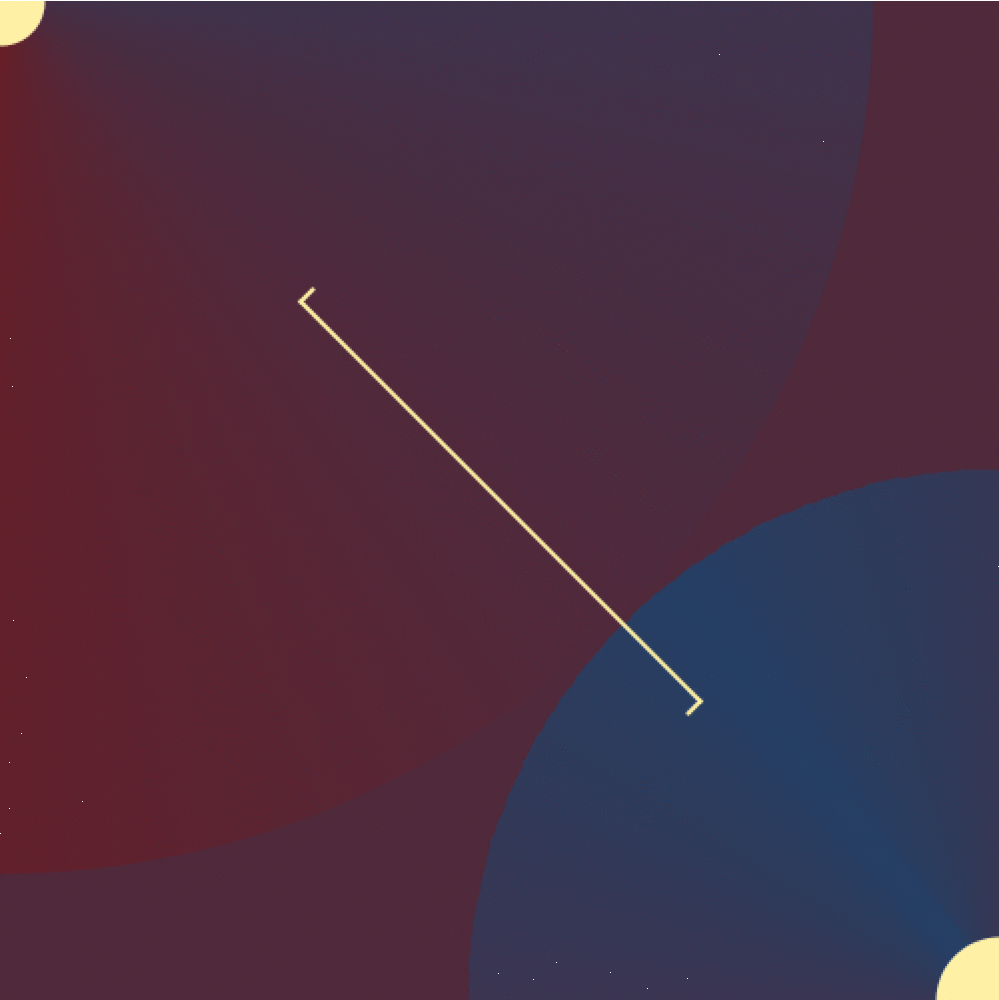
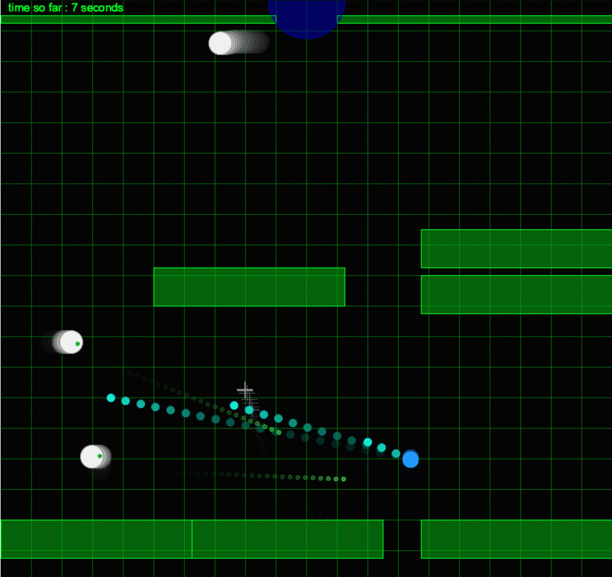
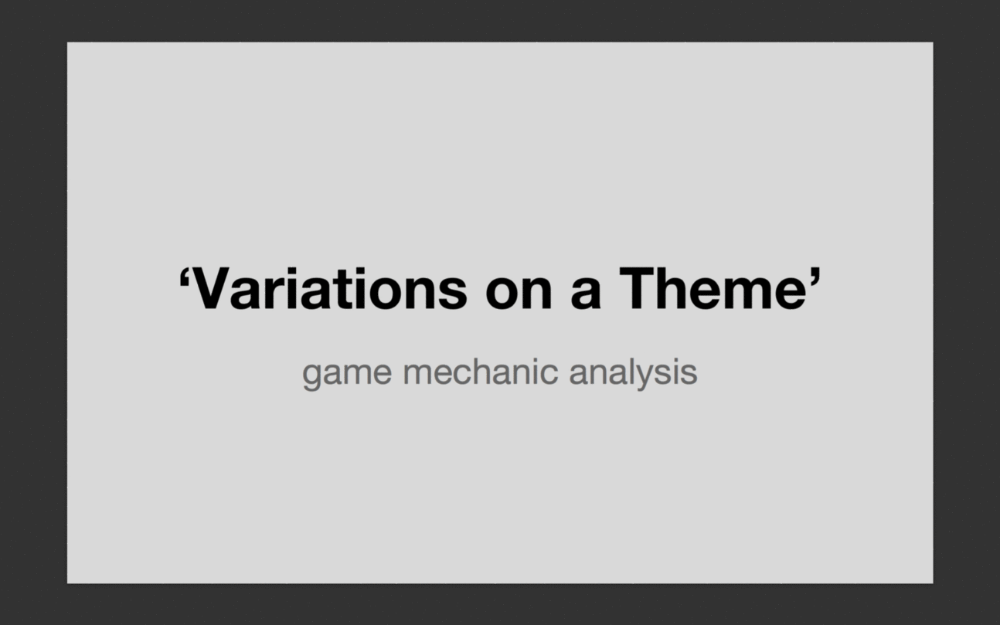
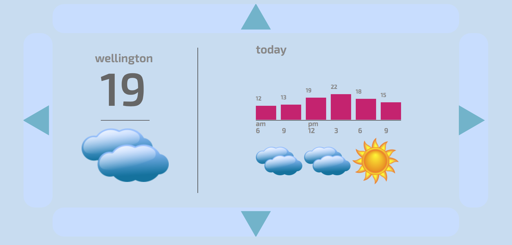

The following 3 projects are all written in 'Processing' which is pretty much a java library and a development environment. The Processing environment makes GUI and visual programs really easy to do, handling GUI creating and rendering so you can focus on the algorithms to produce the visualisations.
I received an 'A' grade in this course.
Project 1: 'Awkward Clock'

The 'Relax' clock. designed to stop you worrying about individual minutes in a day. It is a purposefully vague clock, giving only a rough indication of the current minute or hour. This clock was designed to be both less than and more than a clock or timepiece. While this clock does allow you to keep track of the important times of your day, when those said times aren't urgently soon, it is more like an art-piece and exists only to please the eye and provide colour.
The colorscheme of the clock changes depending on the time of day. The two coloured discs on the watch face keep track of the current hour and minute. The line in the center of the face marks the current color band of each disc's time- this is intentionally vague, to stop you worrrying about each individual minute.
The current color of the large disc, pointed to by the pointer (along with the sun outside) gives an indication of the current time of day, and rotates once every 24 hours.
The smaller disc rotates once per minute, but apart from the constant movement, gives no indication of the exact time.
Project 2: 'Music Visualiser'
This is a relatively simple music visualiser, utilizing the 'Minim' API to get data about the currently playing song, and display a colorful equaliser.
Project 3: Game

This is a simple 'wasd' + mouse based top-down shooter. It is purposely incredibly difficult to complete and quick to restart, this makes it pretty fun as it's a significant achievement to complete even one level.
The difficulty is backed up by the music which i wrote to sound exciting and stressful. Music link
The game utilizes a quad tree for hit-detection, as well as HashLists for storing and referencing game objects for efficiency.
I received an 'A' grade for this course
Game mechanic analysis presentation

This presentations was a small task to get us to analyse a few game mechanics and to get us thinking a bit deeper about the slight differences in the way a mechanic can be implemented.
The task was to pick 3 game mechanics, and talk a bit about each. This included describing what the mechanic is, explaining the effects the mechanic has on a game it's implemented in and slight variations on the mechanic, using games where it is implemented as an example.

This is a simple application to demonstrate an understand of the D3 javascript library.
The task was to design an interface for a simple app that would be suitable for an "Optical head-mounted display", similar to Google's "Google Glass" project. The requirements included a simple interface that required only very basic controls- for example in the situation a user can only interect with their device with only swipe gestures.
This Demo was implemented as an html page, becasue this allowed me to utilize the D3 javascript library, which is used to visualise data.
The app is a simple weather viewer, displaying the weather for a day and city. The interface allows you to swipe between cities vertically and days horisontally. Swiping is represented here as the arrow buttons that border the interface.
~ More to come